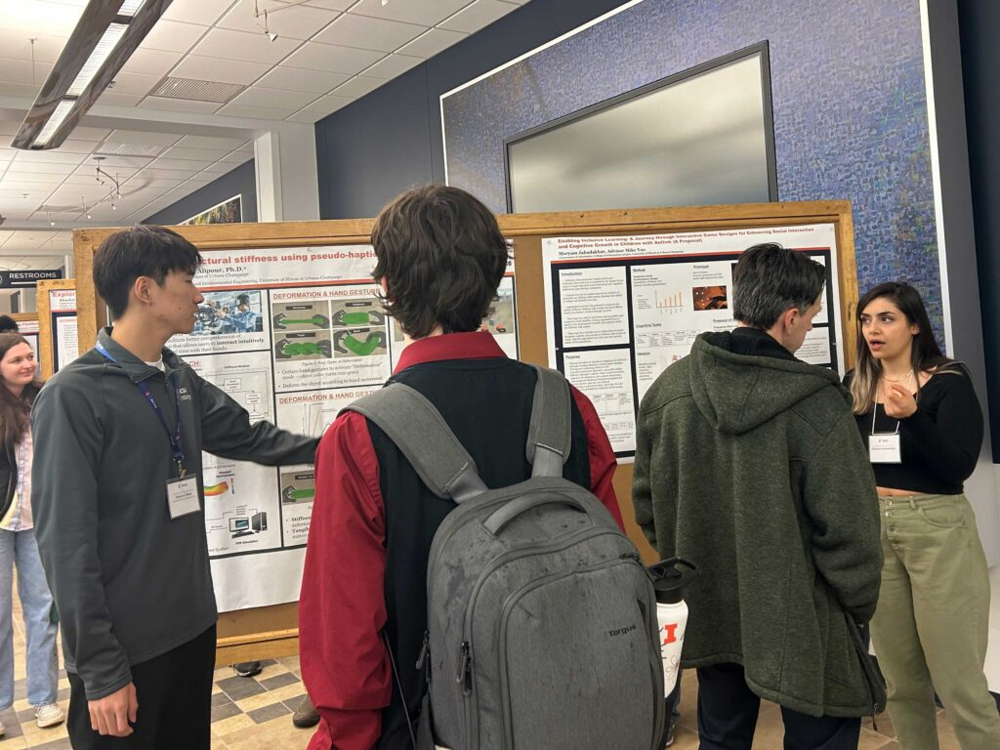

SPIN Offers Real-World Applications to Students May 23, 2024 In the News Students Share this page: Twitter Facebook LinkedIn Email SPIN students David Zhu (L to R), Varenya Jain, Will Hunter and Kaiyan Wang pose with Olena Kindratenko during the 2nd Annual NCSA Student Research Conference in April, 2024. By Jeff Kohmstedt The college experience can be a bit overwhelming with so many majors to choose from and fields to explore. Students frequently look for internships that offer real-world experiences. The Students Pushing INnovation (SPIN) at the National Center for Supercomputing Applications (NCSA) lets undergraduates get involved, be valued as key team members and work with researchers on projects with wide-ranging applications. SPIN was launched in 2012 and gives undergraduate students a chance to work with NCSA staff and faculty affiliates on research and development projects in supercomputing, data analytics, visualization and more. “Students can take the lead and make meaningful contributions on projects, give voice to their ideas and collaborate with researchers,” said Olena Kindratenko, Senior Research Coordinator at NCSA, who leads SPIN. She and a cadre of four student co-chairs helped organize this year’s successful 2nd Annual NCSA Student Research Conference, which attracted over 125 people from campus and industry. “At NCSA, we don’t just offer research opportunities; we cultivate leaders. Engaging with the conference student organization committee isn’t just about event planning; it’s about honing essential leadership skills, collaborating with peers, faculty and industry, and making a lasting impact in our academic community.” –Olena Kindratenko, Senior Research Coordinator Getting Their Hands Dirty The real-world experience is what most attracted David Zhu to NCSA and SPIN. Zhu is a SPIN intern and was the logistics co-chair of the conference, responsible for the overall conference budget. “Initially, what attracted me to SPIN was the opportunity to apply my data science skills in real-world projects and gain practical experience. I was eager to participate in projects where I could implement the concepts I had learned in class and produce innovative results,” Zhu said. Joining Zhu in organizing the conference were three other SPIN students, including Will Hunter, Kaiyuan Wang and Varenya Jain. Hunter was the chair of marketing and communications for the conference, which involved promoting it and making decisions regarding logistics, food selection, securing the conference space and industry outreach. “The most difficult part of my job was to constantly keep in touch with the relevant individuals so I could update them in real time if something needed to be done, which often involved dropping whatever I happened to be doing in order to respond efficiently,” Hunter said. Wang, who graduated this spring, was the industry co-chair. He secured participation from industry partners at the conference, coordinating with Alaina Kanfer, NCSA assistant director for partnership development, Kindratenko and Jain to invite industry partners and university faculty to a panel discussion on AI/ML/HPC and to dine with the students. At regular meetings, Wang said Kanfer helped him and others reach out to big companies like Google, Caterpillar and IBM. “I would like to thank Dr. Alaina Kanfer, who helped us so much during the whole inviting process,” he said. “The mixed panel was absolutely excellent. There were a ton of great discussions and perceptions from industry people and faculty. [Jain] did a great job in mediating the panel. We wished we could have another hour so that more questions can be answered,” Wang said. Jain’s role in conference organizing included reaching out to potential speakers, managing communication and ensuring smooth coordination amidst busy schedules. “The main challenge was aligning schedules and preferences of industry panelists, but ultimately, seeing the diverse range of perspectives represented at the conference was incredibly rewarding,” Jain said. The results of their work were evident in the number of attendees and in the feedback they received from attendees and industry partners. “The research presented at the 2nd Annual NCSA Student Research Conference was exemplary and showcases the outstanding opportunities our SPIN students have in pursuing answers to practical problems. Our graduating SPIN interns represent the best NCSA has to offer, and I look forward to seeing the skills they’ve honed at NCSA applied to solving real-world challenges.” –NCSA Director Bill Gropp NCSA Director Bill Gropp spoke during the poster session of the 2nd Annual NCSA Student Research Conference with SPIN Intern Will Hunter by his side. Seeking Answers Drives These Students In addition to participating in the conference, SPIN students are expected to develop a research plan, submit a final report on that research and conduct a 10- to 15-minute SPIN and EngageNCSA Lightning Talks. Zhu’s research focuses on machine learning and modeling refugee distribution and food insecurity in Lebanon. The aim is to provide humanitarian organizations with improved methods for distributing aid and resources. “We integrated geospatial data and built machine-learning models to predict the distribution of Syrian refugees in each district of Lebanon, as well as the food insecurity scores for each household,” Zhu said. “Dr. Angela Lyons led the group and coordinated our progress while Dr. Aiman Soliman provided insights into data science and geospatial analysis. My fellow SPIN students Ishaan Salaskar, Sona Krishnan, Nishk Patel and other team members were also supportive.” According to Hunter, he knew little about high-performance computing before joining SPIN but knew aerospace professors who were NCSA faculty affiliates. He looked through the different projects and found one that most interested him in research on the finite element method. “I figured it would afford me an opportunity to delve into the deep mechanics of the subject (which has several Aerospace Engineering applications) and to prove to myself that I am capable of independent study,” he said. Hunter’s research is called “Integration Schemes Over Different Type and Order Finite Elements,” with the goal of creating “a library using extremely recent C++ features that could perform FEA (finite element analysis) for a wide array of engineering problems.” In choosing SPIN, Wang found NCSA’s reputation and the application of classroom learning to real-world situations hard to resist. “Over the year, I developed an application, conducted experiments and published a conference paper – achievements way beyond my initial expectations,” he said. SPIN students presented their research during the poster session of the 2nd Annual NCSA Student Research Conference. Wang’s research involves using virtual reality to help students experience structural mechanics remotely “in order to learn abstract engineering concepts.” In choosing SPIN, Jain was drawn to NCSA’s high-performance computing and supercomputing applications. Gaining real-world experience also helped tip the scale. “I hoped to not only deepen my understanding of supercomputing workflows but also to establish connections and work with real data, which are invaluable in both academia and industry,” he said. Jain described his research as “developing a next-generation sequencing toolkit called NEAT for various bio-applications. The aim was to address limitations in simulating genetic mutations accurately and efficiently. Throughout this project, I received invaluable guidance from mentors and collaborators who provided expertise in both biology and computing.” It Takes a Village Jain and the other graduating SPIN students didn’t get where they are today by themselves. It takes a village of mentors who support, guide and inspire them to succeed, and there were many who helped Zhu, Hunter, Wang and Jain along the way. Wang credits Professor Mohamad Alipour for providing invaluable guidance and feedback during the whole research process. “He always gave me clear instructions and enough time to let me study and understand the problem. He pointed out the drawbacks and brainstormed with me together to find ways to resolve the problems.” Zhu noted Professor Angela Lyons and NCSA Research Scientist Aiman Soliman for their support of his work. “Lyons was an exceptionally supportive and empowering mentor. She demonstrated foresight in long-term planning and overall project structuring, and she encouraged and celebrated our innovation and ideas throughout the project. Soliman was a knowledgeable and insightful researcher. He consistently provided critical solutions to the problems we faced and proposed novel techniques and analyses based on his expertise,” Zhu said. Hunter celebrated NCSA Research Scientist Qiyue Lu’s support as a teacher and his “eagerness to discuss the larger implications and philosophies behind science as a whole.” The 2023–24 graduating SPIN class is leaving NCSA with a wealth of knowledge and experience that will take them far. NCSA Outstanding Academic Year 2023-24 Students NCSA congratulates graduating spring semester SPIN interns and is happy to recognize SPIN interns and mentors for receiving NCSA recognition for significant contributions to their projects, student leadership and outstanding mentorship. Kiara Balleza, SPIN Intern, The Reading Time Machine: Transforming Astrophysical Literature into Actionable Data Using Citizen Science Nicolas Fernandes, SPIN Intern, Foundation AI models in Physics Will Hunter, SPIN Intern, Outstanding Student Leadership Varenya Jain, 2021-22 SPIN Intern, Outstanding Student Leadership Hunter Jiang, SPIN Intern, MusicBox – Web-interface for atmospheric chemistry simulations Maxwell Lindsey, SPIN Intern, Developing AI-Based Chatbots for Subject-Specific Tasks Eric Modesitt, SPIN Intern, Investigating the Power of Large Language Models for Workflow Management Yichen Liu, SPIN Intern, DeepDISC: Detection, instance segmentation, and classification for astronomical surveys with deep learning Kaiyuan Wang, SPIN Intern, Outstanding Student Leadership Zirui Wang, SPIN Intern, Digitize Scanned Historical Map for Critical Mineral Assessment Donlapun (Dorothy) Wongkarnta, SPIN Intern, Enhancing Optical Character Recognition (OCR) Capabilities for Historical Documents Eric Yu, SPIN Intern, High Performance Computing for Magnetized Neutron Stars David Zhu, SPIN Intern, A Geospatial Analysis of Food Insecurity Among Refugee Households in Lebanon Using Machine Learning Techniques and Outstanding Student Leadership NCSA Outstanding Academic Year 2023-24 Mentors Mohamad AlipourMichael AndersonMatthew BerryPhuong Cao Kastan DayEliu HuertaVlodomyr KindratenkoAngela LyonsQiyue LuRohan MarwahaSantiago Nunez-Corrales Aiman SolimanAnastasia StoopsYifang Zhang SPIN interns also presented their research projects at the 2024 Engineering Open House, winning second and third in the Outstanding Undergraduate Research category. More information about SPIN projects can be found here. ABOUT NCSA The National Center for Supercomputing Applications at the University of Illinois Urbana-Champaign provides supercomputing, expertise and advanced digital resources for the nation’s science enterprise. At NCSA, University of Illinois faculty, staff, students and collaborators from around the globe use innovative resources to address research challenges for the benefit of science and society. NCSA has been assisting many of the world’s industry giants for over 35 years by bringing industry, researchers and students together to solve grand challenges at rapid speed and scale.